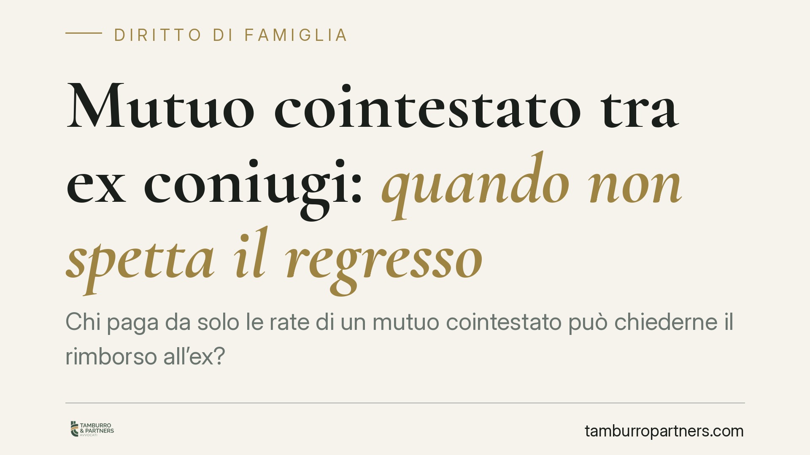

Mutuo cointestato tra ex coniugi: quando non spetta il regresso
Chi paga da solo le rate di un mutuo cointestato può chiederne il rimborso all'ex? Una recente pronuncia di merito ha escluso il regresso quando il cofirmatario non è proprietario dell'immobile e ha firmato solo per rafforzare i requisiti reddituali. Il tema tocca la differenza tra obbligo verso la banca e ripartizione interna del debito tra gli ex.

Il caso: diritto di regresso e mutuo cointestato
Due ex coniugi avevano acceso insieme un mutuo. L'immobile, però, risultava di proprietà esclusiva di uno solo di loro; l'altro aveva firmato il contratto per consentire alla banca di raggiungere la soglia reddituale necessaria all'erogazione del finanziamento.
Dopo la separazione, il proprietario esclusivo aveva continuato a pagare le rate e aveva poi agito contro l'ex per ottenere la metà di quanto versato, invocando il diritto di regresso. Una recente pronuncia di merito ha respinto la domanda, escludendo il regresso verso il cofirmatario non proprietario che non aveva tratto alcun vantaggio economico dall'immobile.
Una precisazione doverosa: si tratta di una decisione di un singolo tribunale, non di un orientamento consolidato. Il principio non è automaticamente generalizzabile a tutti i mutui cointestati.
Inquadramento normativo: solidarietà e regresso
Il punto di partenza sono gli artt. 1298 e 1299 del Codice civile.
L'art. 1299 c.c. disciplina il regresso: il condebitore in solido che ha pagato l'intero debito può chiedere agli altri la parte di loro competenza. È lo strumento che consente, nei rapporti interni, di riequilibrare un pagamento sostenuto da uno solo.
L'art. 1298 c.c. precisa però il presupposto: nei rapporti interni l'obbligazione in solido si divide tra i condebitori, ma solo "se non risulta diversamente". E, soprattutto, le quote si presumono uguali "se non risulta diversamente". È proprio questa clausola a reggere la decisione: se un condebitore non ha interesse nel debito, la sua quota interna può essere pari a zero.
Un chiarimento terminologico utile. Il cofirmatario di un mutuo cointestato è a tutti gli effetti un condebitore solidale, non un garante o un fideiussore in senso tecnico. La firma per sole ragioni reddituali ha, nella sostanza, una funzione assimilabile a una garanzia, ma sul piano giuridico il cofirmatario resta obbligato in solido verso la banca.
Verso la banca nulla cambia, cambia tra gli ex
Qui sta il punto più delicato, da tenere ben distinto.
Verso la banca l'obbligo di entrambi i cointestatari resta pieno e invariato. L'istituto di credito può pretendere l'intera rata da ciascuno dei due, a prescindere da chi sia il proprietario dell'immobile e da chi, in concreto, paghi. La pronuncia non libera nessuno dall'esposizione esterna.
Ciò che la decisione incide è il solo rapporto interno tra gli ex: chi ha pagato non può automaticamente pretendere la metà dall'altro se quest'ultimo non ha ricavato alcun beneficio dall'operazione e ha firmato per pura necessità bancaria.
Implicazioni pratiche
Per chi si trova in una situazione analoga, le conseguenze sono concrete.
Il proprietario esclusivo che conta di "farsi rimborsare" metà delle rate dall'ex potrebbe non riuscirci, se emerge che l'altro non ha avuto vantaggi dall'immobile. Specularmente, il cofirmatario non proprietario dispone di un argomento difensivo contro una domanda di regresso.
Resta però un dato che non va sottovalutato: finché il nome compare nel contratto di mutuo, l'esposizione verso la banca permane. Un giudizio favorevole sul regresso interno non cancella il rischio di essere escussi dall'istituto in caso di inadempimento.
Cosa fare in concreto
- Recuperate il contratto di mutuo e l'atto di acquisto. Verificate chi risulta proprietario dell'immobile e a quale titolo ciascuno ha firmato il finanziamento.
- Ricostruite i flussi di pagamento. Conservate estratti conto e bonifici: documentare chi ha pagato cosa è decisivo in un eventuale giudizio di regresso.
- Distinguete i due piani. Non confondete l'obbligo verso la banca (che resta) con il rapporto interno tra ex (dove il regresso può essere escluso o ridotto).
- Valutate l'accollo o la rinegoziazione. Se l'immobile resta a uno solo, considerate con la banca l'accollo del mutuo o il subentro, per sciogliere la cointestazione.
- Inserite il tema negli accordi di separazione. Consigliamo di regolare espressamente mutuo e proprietà in sede di separazione o divorzio, evitando contenziosi successivi.
---
*Contributo informativo a cura di Tamburro & Partners - Avv. Giuseppe Tamburro. Non costituisce parere legale.*
Ogni famiglia ha il suo equilibrio.
Separazione, divorzio, affidamento, assegno: se vuoi un confronto riservato su una specifica situazione, scrivi allo studio. Ti rispondiamo entro un giorno lavorativo.